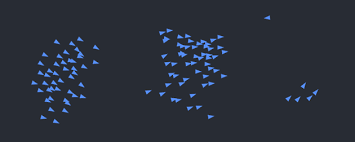

Shane Wasserman's Personal Website
Welcome to my personal website! I’m thrilled to share this space, which I’ve thoughtfully crafted to showcase my professional journey, accomplishments, and ongoing projects. This site serves as a dynamic platform where I highlight my skills, document my growth, and present the work I’m most proud of.
As a continuously evolving project, this website reflects my dedication to lifelong learning and professional development. Here, you'll find insights into my latest projects, a detailed look at my career, and glimpses into the creativity and expertise I bring to every endeavor.
I invite you to explore my portfolio, learn more about my background, and connect with me to discuss potential opportunities, collaborations, or simply share ideas. Thank you for visiting, and I hope you enjoy exploring what I have to offer!
Personal Favorites:
Parsing GUI
Constructed a GUI to tokenize source code, check for proper language grammar, and display a textual and visual parse tree from acceptable lines of code.
 View ProjectBoids
Designed a boids program using HTML and CSS. Using sprite animation and boids to create a flock a penguin sprites. Sprites demonstrate cohesion, separation, and alignment.
 View Project
View Project
Dream House
Fusion 360 CAD design for a dream house layout. Eventually I want to build my dream house from a CAD design that I personally made!
 View Project
View Project
Thank you for visiting my personal website! This space is not just a showcase of my work, but also a reflection of my dedication to growth, innovation, and creativity. Whether you're exploring my projects, reviewing my skills, or just getting to know me, I hope this site gives you a sense of my passion for what I do. If you're looking for a motivated and resourceful professional to join your team, I'd love to hear from you. Let's connect and discuss how I can contribute to your organization's success. Feel free to reach out through my contact links below or drop me a message directly. Together, we can build something great!